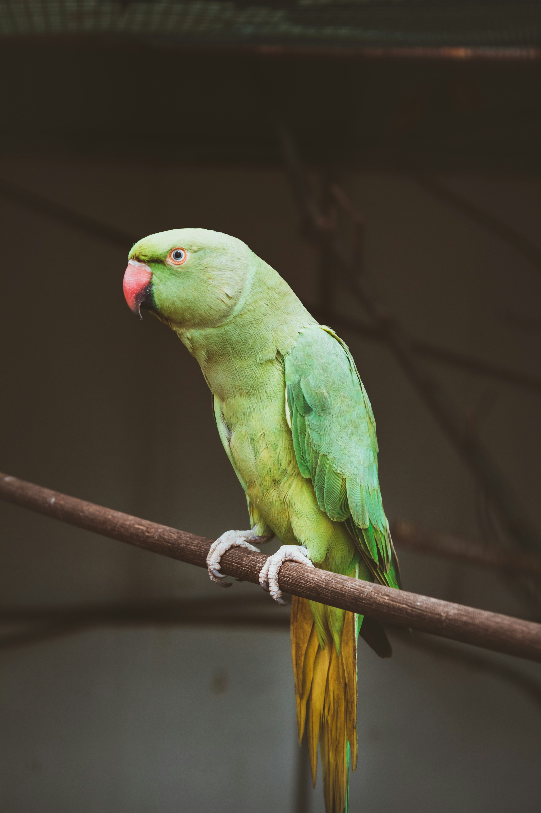

The Rose-Ringed Parakeet is a familiar bright-green parakeet with a long pointed tail and large red bill. Adult males develop a narrow dark and rose-coloured neck ring, while females and young birds lack the complete male pattern. It is highly adaptable and thrives in gardens, farmland, forests, plantations, and cities. Large noisy flocks are often seen flying between roosting and feeding areas.